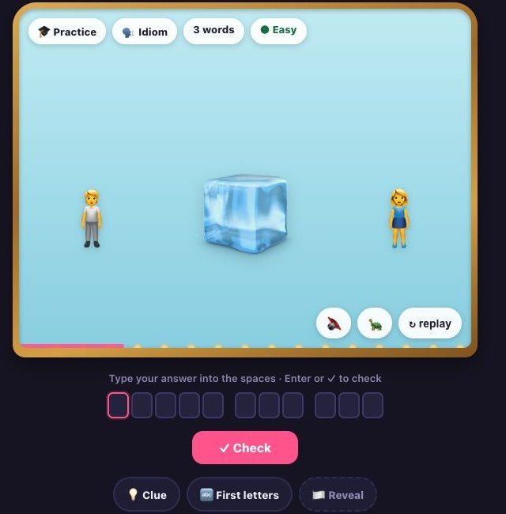

One show a day
Every night, a cast of emoji acts out one famous film, book, song, idiom, proverb or quote. Watch the performance, then type the answer into its letter spaces.
The week has a rhythm: four difficulty levels rise gradually from welcoming Mondays to fiendish Sundays. Streaks and statistics remember the run, but no account is required.

The performance
The clue has timing
The emoji do not merely sit in a row. They enter, react, repeat, transform and occasionally deliver a visual punchline. Replay and slow-motion controls let the player study the staging.
Watch
Animated charades
Each clue is staged as a miniature performance rather than a static emoji equation.
Guess
Helpful structure
Word lengths and letter spaces make free-text guessing precise without giving the answer away.
Return
A weekly rhythm
Difficulty rises through the week, creating a daily ritual with a natural dramatic arc.
Curation is part of the design
Every candidate begins as a pitch, then survives a text review, staging pass and backstage playtest. The hardest clues must transform an idea rather than simply display the words in the answer.
That produces a repertoire with different kinds of recognition: literal scenes, visual jokes, repeated structures, oblique references and tiny acts of theatrical misdirection.
“Emoji act out a famous phrase. You guess it.”
Tonight’s performance is about to begin.
Raise the curtain and see if you can name the show.
Play Emojo